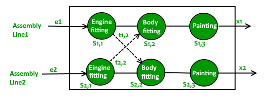

El problema en esencia dicta que:
- Una fábrica de automóviles tiene dos líneas de montaje, cada una con n estaciones.
- Una estacion se indica con S, i, j donde i es 1 o 2 e indica la línea de montaje en la que se encuentra cada estacion, y j indica el número de cada estación. El tiempo empleado por estacion se indica mediante a i,j.
- Cada estacion está dedicada a algún tipo de trabajo como montaje de motores, montaje de carrocerías. pintura, etc. Por lo tanto, el chasis de un automovil debe pasar por cada una de las n estaciones en orden antes de salir de fábrica. Las estaciones paralelas de las dos líneas de montaje realizan la misma tarea. Después de pasar por la estación S,i, j continuará hasta la estación S, i, j + 1 a menos que decida transferirse a la otra línea.
- Continuar en la misma línea no tiene ningún costo adicional, pero la transferencia de línea de montaje tiene un tiempo de entrada e[i] y un tiempo de salida x[i] que pueden ser diferentes para las dos lineas. Proporcione un algoritmo para calcular el tiempo mínimo que se necesitará para construir un chasis de automóvil.
